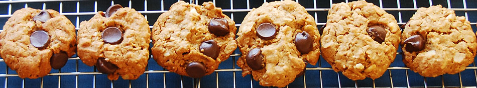

Home
Breakfast
Campanile's Granola
Granola
Oatmeal with Bananas and Goodies
Pumpkin Scones
Shakshuka
Appetizers
Baked Brie with Apricot Jam
Baked Brie
Bruschetta
Easy Corn Relish
Fresh Salsa
Lemon Garlic Hummus
Onion Dip from Scratch
Pear, Leek Gruyere Turnovers
Pickles
Spicy Marinated Mozzarella with Oregano and Capers
Stuffed Endive Spears
Soups
Salads
Breads
Main Courses
Cheese Enchilada
Checkpea Tomato Stew w/ Moroccan Flavors
Chile Relleno Casserole
Corn and Green Chile Tamale Casserole
Corn, Chile and Cheese Casserole
Eggplant Parmesan
Side Dishes
Sauces
Desserts
Cakes
Cookies
Ice Cream
Other
Holidays
Corn, Tomato and Bean Salad
Eggplan Salad
Lentil Salad with Tomato and Dill
Liora's Tomato Cucumber Salad
Mexican Salad